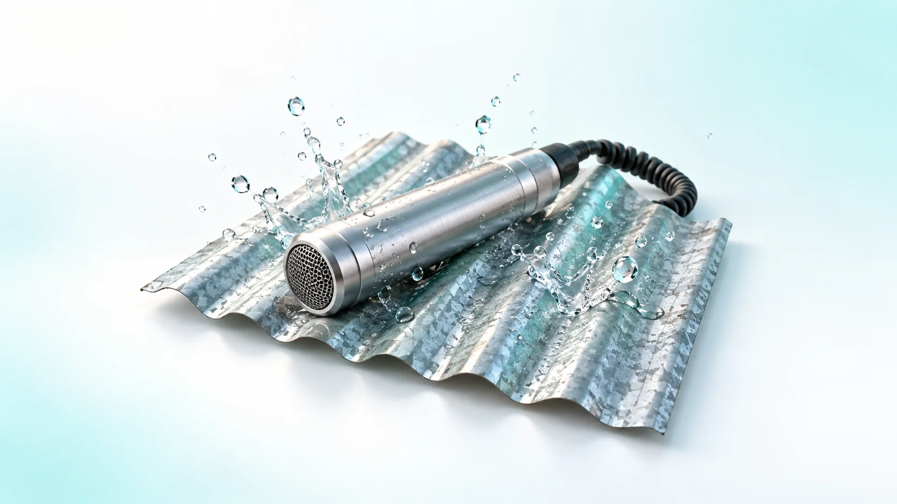
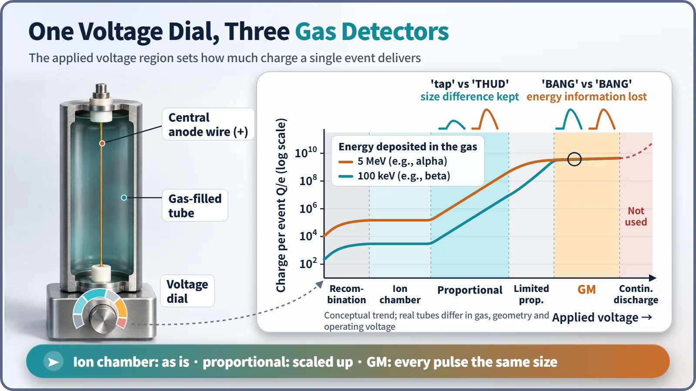
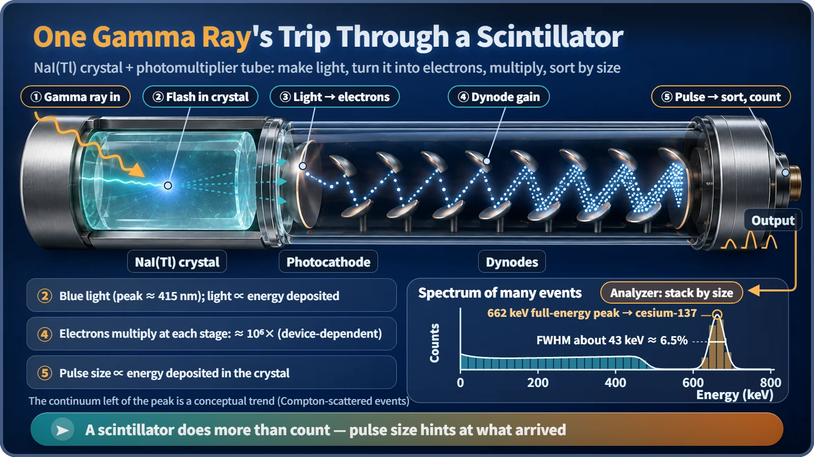

Nuclear & Radiation Basics · 024
Ears That Count Raindrops on a Tin Roof — How Radiation Detectors Count What You Can't See
Detectors never see radiation itself; they turn the ionization and excitation it leaves behind into electricity or light, then count the pulses and measure their size.

A radiation detector never sees radiation itself; it turns the ionization and excitation radiation leaves in matter into an electrical signal or a flash of light. The number of signals tells how many particles arrived, and the size of each signal tells how much energy it deposited. [1]
Counting raindrops with your eyes closed
At night, rain drums on a tin roof and you can't see a single drop. Yet the count of "tiks" tells you how hard it's raining, and a "tap" or a "thud" tells you whether the drops are small or fat. A detector works the same way: it listens to the traces radiation leaves when it strikes matter. Some devices only count the sounds; others also measure how loud each one is.
Every detector's shared secret: turning traces into signals
Radiation deposits energy by ionization, knocking an electron off an atom, and excitation, boosting an electron to a higher energy state. Detectors either gather the freed charge on electrodes as an electrical signal or catch the light excited atoms give off. The amount of trace is proportional to the energy deposited: in air, one ion pair is created for about every 34 eV.
Gas detectors: one voltage dial changes their character
Fill a tube with gas, add two electrodes and a voltage, and ion pairs made by radiation are pulled to the electrodes as a current pulse. What happens in the gas depends entirely on the applied voltage. [1]

| Region | What happens | Energy information |
|---|---|---|
| Recombination | Ion pairs recombine before reaching the electrodes | Unusable |
| Ionization chamber | All ion pairs collected without amplification; used for dose rate and reactor power | Yes |
| Proportional counter | Electron avalanche multiplies the signal hundreds to tens of thousands of times, in proportion | Yes (can tell alpha from beta) |
| Geiger–Müller (GM) | The avalanche spreads through the tube in one discharge; every pulse is about the same size | Lost; only the count remains |
A GM tube is deaf for about 50 to 100 μs after each discharge. Because of this dead time it can undercount where radiation is intense. Push the voltage still higher and the tube discharges on its own, with no radiation at all, and is damaged.
An ear that listens with light: the scintillation detector

In a crystal of sodium iodide with a trace of thallium, NaI(Tl), a gamma ray excites electrons that emit a blue flash whose brightness is proportional to the energy deposited. A photomultiplier tube turns the light into electrons that multiply at each metal plate (dynode) until the pulse is about a million times larger. Sorting many pulses by size gives an energy spectrum: for cesium-137, events that deposit all their energy pile up into a peak at 662 keV. Resolution is about 6 to 7% at 662 keV, but the detector works at room temperature and catches gamma rays well, so it is common in field monitoring and airport screening. [2]
The ear with perfect pitch: semiconductor detectors
A high-purity germanium (HPGe) detector collects the electron–hole pairs radiation creates directly with an electric field. Each pair costs only about 3 eV, so the same energy yields more than ten times as many charge carriers as in a gas, and the statistical jitter drops. The peak width at 1,332 keV is about 2 keV, a little over 0.15%. The price is cooling to liquid-nitrogen temperature (−196 °C), so HPGe is mainly used for precise laboratory nuclide analysis.
Ears you wear: personal dosimeters
A worker's dosimeter records how much dose the body has received so far. A TLD (thermoluminescent dosimeter) stores absorbed energy in crystal defects and releases it as light when heated; an OSL dosimeter is read with light instead of heat. Many workers also wear an electronic dosimeter with a real-time readout and alarm.
The number of clicks is not the dose
cpm (counts per minute) is just how many pulses were counted, and a big detector counts more than a small one in the same spot. μSv/h is a dose rate, the effect on the human body, obtained by calibrating the detector against a standard source. So cpm should not be compared across instruments or converted to μSv/h without calibration. Decay is also random: 100 counts wobble by about ±10, 10,000 counts by about ±100, so longer counts are more trustworthy. [1]
Key takeaways
At nuclear facilities these ears share the work: ionization-chamber-type detectors watch reactor power, GM tubes and scintillators check contamination and area dose, HPGe identifies nuclides, and dosimeters keep each worker's record. A detector turns radiation's traces into electricity or light, hearing "how many" from the count and "how strong" from the size.